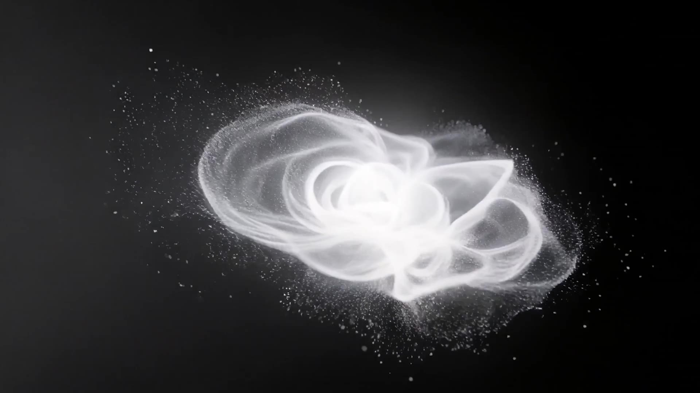
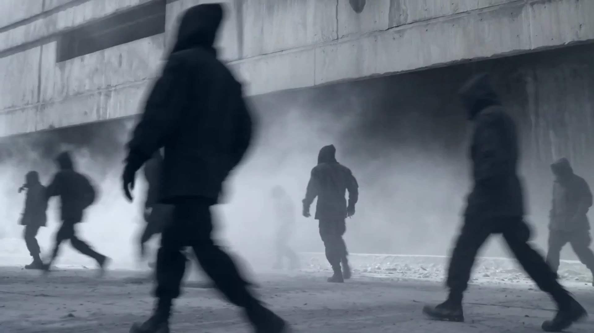
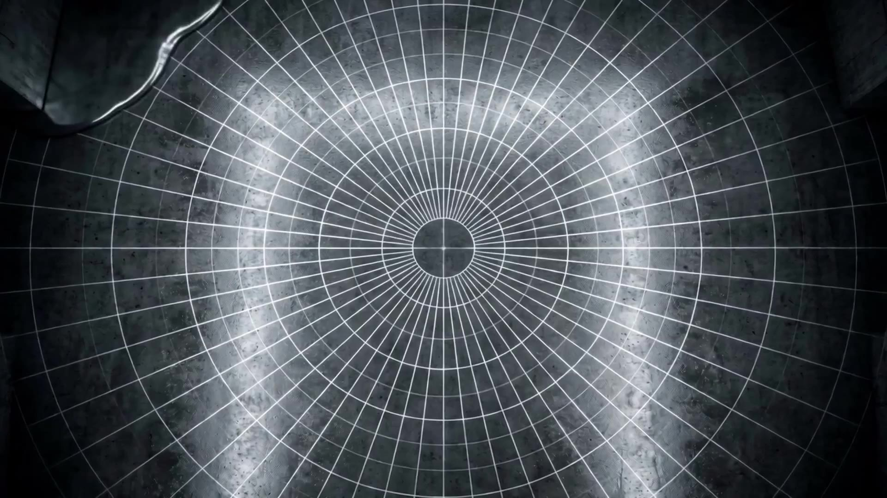

The installation is already happening when the visitor arrives and continues after they leave. There is no privileged seat, fixed sequence or single point of view.
You do not watch time unfold. You enter somewhere inside it.
One visitor stays with an image for ten minutes. Another crosses it in thirty seconds. Someone enters while somebody else leaves.
One space can contain many different nows.
Moving image becomes surface and scale. Spatial sound creates events beyond the field of vision. Darkness hides what comes next. Light determines what appears.
The room is not where the artwork is placed. The room becomes part of the artwork.
Sparse movement can make duration expand. Repetition can make the mind anticipate what comes next. Increasing density can compress attention.
Long intervals and slow visual change allow the present to widen.
Rhythm and density pull attention toward what comes next.
The measured interval remains unchanged. The person experiencing it does not.
The six findings behind Construct of Time are not an explanation added afterwards. They are the factual questions from which the work developed.
Conscious experience integrates information across a short temporal window.
The brain synchronises sensory signals arriving at different speeds.
The brain anticipates what is likely to happen and corrects those predictions against incoming information.
Neural preparation can precede conscious awareness of a voluntary decision.
Later information can influence how something moments earlier is perceived.
Attention, anticipation, fear, novelty and memory can stretch or collapse duration.



A corridor creates anticipation. Distance delays arrival. A doorway divides one experience from another. An empty room slows the body.
The system remains. The experience belongs to the space.